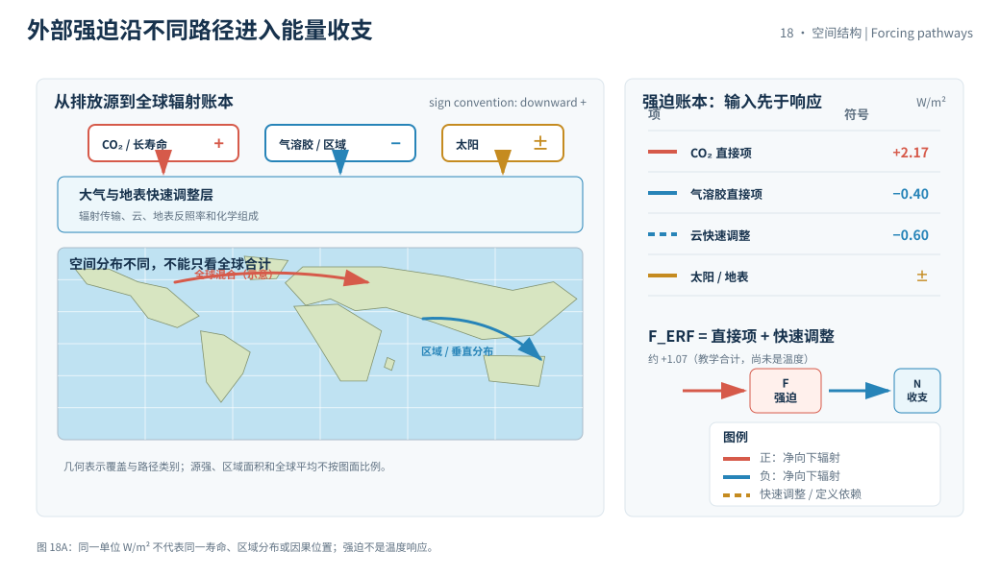
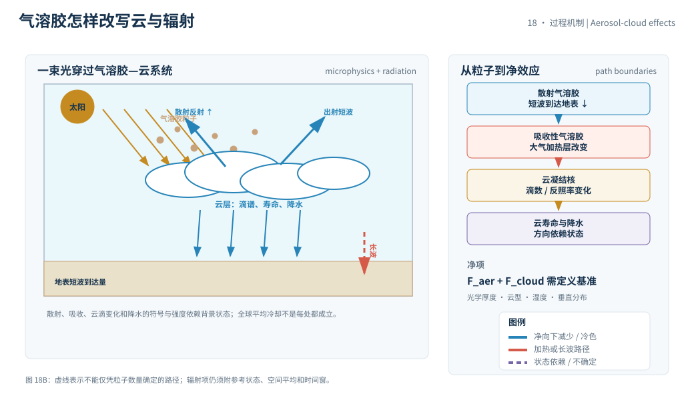

本页目录
18 · 温室气体、气溶胶与辐射强迫
辐射强迫是对能量收支施加的驱动描述，不是温度变化本身，也不是反馈的另一个名字。本页用同一套符号区分直接辐射改变、快速调整、有效辐射强迫（ERF）与后续气候响应，特别标出 IPCC 术语的边界。
资料核验日期：2026-09-01。实验中的浓度比和气溶胶项是教学输入；不是某一指标年的浓度或排放观测。涉及会更新的浓度、排放或辐射产品时，应写指标年、基准、版本和核验日期。
学习层：同一片天空里，暖驱动和冷驱动如何记在不同栏
1. 具体情境：把一组排放影响送进能量收支表
政策分析员要比较长寿命温室气体、硫酸盐气溶胶、云调整和太阳变化在能量收支表中的作用。表格把它们都写成 \(\mathrm{W\,m^{-2}}\)，但这并不意味着它们有相同寿命、空间分布或可逆性。
具体情境只要求把驱动拆栏：哪些项直接改变辐射，哪些项属于大气或地表的快速调整，哪些温度响应要留到下一页的反馈模型里。它不是一条未来温度预测。
2. 揭示前预测：符号、对数和术语边界
在打开实验前预测：二氧化碳浓度比从 \(1.2\) 增到 \(1.8\) 时，按对数公式增加的强迫会不会增加同样的绝对量？负的气溶胶项能否让温室气体的所有影响“抵消”？如果一个过程随变暖而反过来改变净辐射，它应写在 forcing 栏还是 feedback 栏？
先给每一项标注“外部驱动”“快速调整”或“温度响应”。只有完成预测，实验才揭示合计的 ERF 教学值。
3. 公式桥：从辐射改变到 ERF，但不跨入温度响应
对二氧化碳，常用的教学近似写成
系数和适用范围来自辐射传输近似；在本页只把它当作浓度比到顶层净辐射改变的桥，不声称它覆盖所有谱线、湿度、云和空间分布。
把教学账本分成
这里 \(A_{\rm rapid}\) 表示快速调整的教学项；IPCC 的 ERF 是在外部驱动后允许快速大气和地表过程调整、但尚未发生完整表面温度响应时的净辐射改变。不同研究的分解边界和符号约定必须随定义一起报告。
净能量收支可在下一层写成
其中 \(F\) 是强迫，\(\lambda_{\rm IPCC}\) 是通常为负的反馈参数，\(H\) 是海洋等对热的摄取；本页不把 \(F\) 直接改名为 \(\Delta T\)。
4. 互动实验：拆开直接项、快速调整和总 ERF
无 JavaScript 时的静态 fallback：默认教学输入为 \(C/C_0=1.50\)、直接气溶胶 \(-0.40\ \mathrm{W\,m^{-2}}\)、云快速调整 \(-0.60\ \mathrm{W\,m^{-2}}\)、太阳项 \(0.00\ \mathrm{W\,m^{-2}}\)、地表项 \(-0.10\ \mathrm{W\,m^{-2}}\)。这些不是当前观测归因。
| 账本量 | 默认结果 | 单位 / 解释 |
|---|---|---|
| \(F_{\mathrm{CO_2}}\) | 约 2.17 | W/m²；\(5.35\ln(1.5)\) 教学关系 |
| 直接项合计 | 约 1.67 | W/m²；不含快速调整 |
| 快速调整 \(A_{\rm rapid}\) | -0.60 | W/m²；教学云项 |
| \(F_{\rm ERF}^{\rm toy}\) | 约 1.07 | W/m²；尚未转成温度 |
| 温度响应 | 未计算 | 需反馈参数、热摄取与时间窗 |
图中暖色只表示正驱动、冷色只表示负驱动；颜色不替代 IPCC 定义或不确定度。
5. 边界与常见误区：同号不等于同机制
- 强迫不是反馈：外部驱动改变能量收支；反馈是系统状态改变后对初始扰动的响应链。把水汽反馈写入 CO₂ forcing 会重复计算。
- 负气溶胶强迫不是温室气体的反向删除键：寿命、垂直分布、区域性、沉降和云作用不同；净辐射抵消不代表化学或生态影响抵消。
- RF 与 ERF 不能随意互换：ERF包含快速调整，比较数值时必须写出定义、边界、时间和空间平均。
- 正强迫不等于立即升温：海洋摄热、冰雪和反馈会改变时间路径；温度是响应变量，需要单独的能量平衡模型。
气溶胶还会影响云滴数、寿命、降水和大气稳定度；二氧化碳则具有长寿命和跨区域混合特征。一个全球平均净强迫表不能替代区域化学与动力过程。
迁移问题：如果某区域的气溶胶减少使冷却项变弱，而温室气体浓度不变，局地净辐射会如何变化？若云量变化是由温度升高触发，而不是外部排放直接指定，你会把它放进 forcing、rapid adjustment 还是 feedback，并说明时间尺度？


1. 术语的正式分工
IPCC 语境下，辐射强迫描述外部驱动引起的净辐射通量变化；有效辐射强迫进一步允许快速调整。反馈描述气候系统中由温度或其他状态变化触发、并改变净能量收支的过程。敏感度则是对给定强迫的温度响应尺度。
这些量有不同的因果位置：驱动是输入，反馈是响应中的增益或恢复项，敏感度是把二者和热惯性联系起来的输出。公式可以把它们放在一行，但名称不能互换。
2. 气溶胶的多条路径
散射气溶胶可以减少到达地表或顶层的短波，吸收性气溶胶还会改变大气加热的高度分布；云凝结核会改变云滴谱和云反照率，作用方向与强度依赖云型、湿度和背景气溶胶。
因此“气溶胶冷却”是全球平均的常见概括，不是每个地点、每个季节、每个波段的充分结论。观测与模型需要同时约束光学厚度、粒径、化学组成、云微物理和降水响应。
3. 基准、空间平均与符号
强迫数值必须附参考状态：同一过程相对于不同基准、不同高度或不同时间窗，数值和符号都可能改变。
全球平均的负项可能掩盖区域正项；把一张全球收支表用于地方空气质量或降水判断，属于尺度越界。
直接辐射、快速调整和温度反馈可以在一个能量方程中相连，但每一项的因果时间和实验边界必须分别标出。
所以强迫预算首先是定义和收支工具，只有在给定反馈、热摄取与时间窗后，才进入温度响应问题。
4. 证据与动态数据标记
长期温室气体浓度可由全球监测网络约束，辐射强迫通常依赖观测、辐射传输和快速调整的综合估计。若使用会更新的浓度或排放数字，应注明指标年、基准期、数据版本、不确定度和核验日期；本页只用教学比值。
优先资料为 IPCC AR6 WGI 第 7 章、IPCC AR6 WGI 和 NOAA Global Monitoring Laboratory。
5. 速查结论
- 先问“输入还是响应”，再给一个辐射项命名。
- \(\mathrm{W\,m^{-2}}\) 是通量单位，不是温度单位。
- ERF的快速调整边界必须写明，不能把所有项无条件相加。
- 由强迫到温度还要经过反馈、热摄取和时间尺度。
下一页把正反馈、恢复参数和海洋时滞接起来，定义敏感度而不把它与强迫混为一谈。